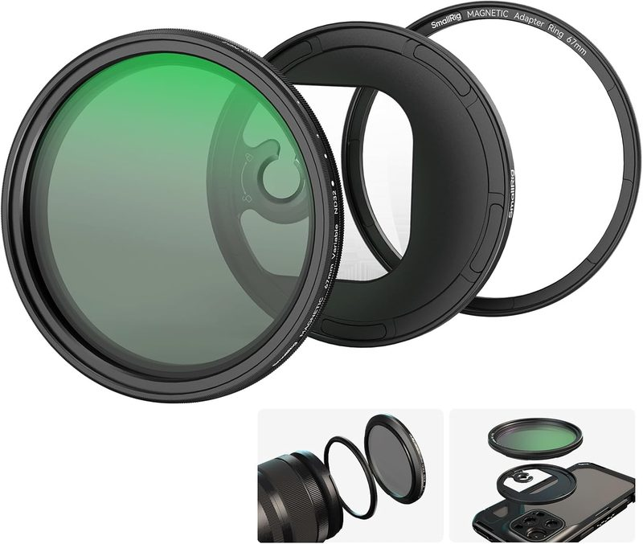
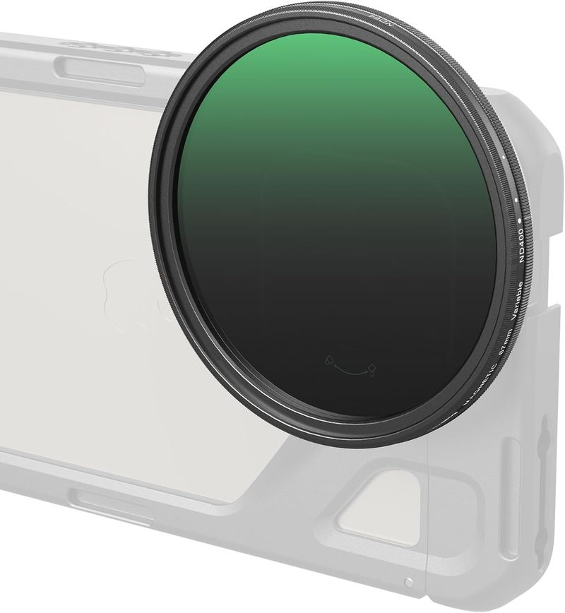
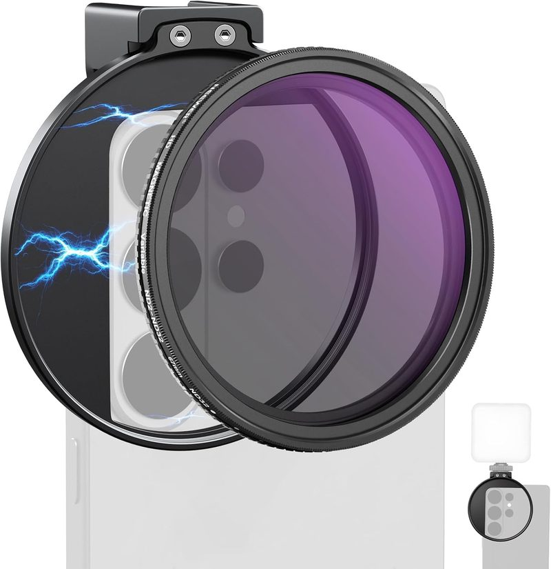
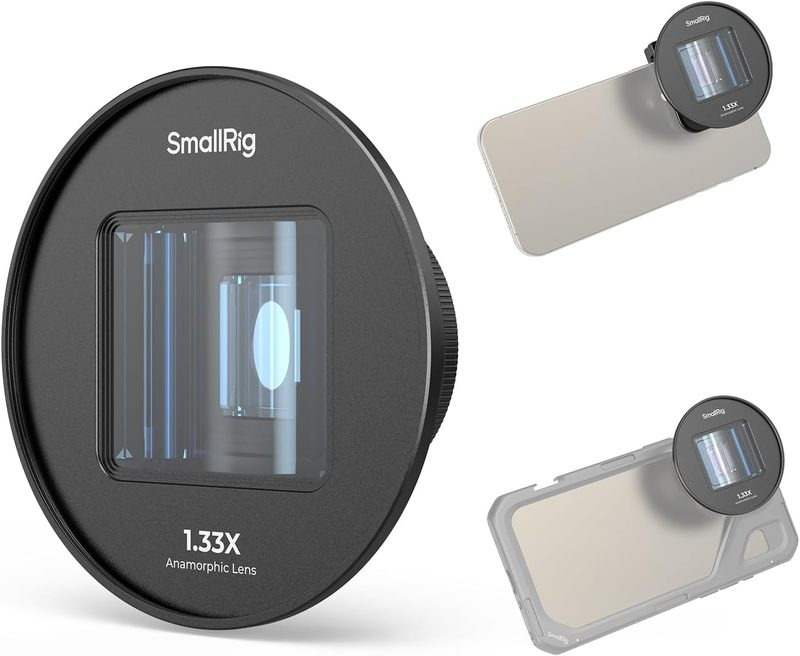
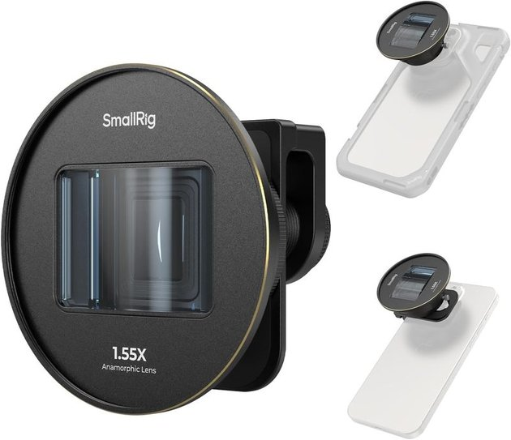

Best ND Filters & Anamorphic Lenses for Cinematic Phone Video (2026)
Last updated: August 24, 2026 · Research-based guide · techpicksio.com
Quick answer: For controlling exposure in bright daylight, the SmallRig 67mm Magnetic VND ND2-ND32 is the most broadly useful ND filter for phone video, covering the 1-5 stop range most creators need. For the cinematic widescreen look, the SmallRig 1.33x Anamorphic Lens is the most accessible entry point, using a standard T-mount compatible with SmallRig's phone cage ecosystem. This comparison is based on manufacturer specifications and aggregated user reviews, not hands-on testing.

SmallRig 67mm Magnetic VND ND2-ND32
Best for anyone shooting outdoors whose daylight footage looks choppy instead of cinematic: the SmallRig VND ND2-ND32's hard rotation stops eliminate the X-shaped artifact that ruins cheaper variable NDs, and its magnetic mount means you can snap it on before a shot instead of fumbling with threads. Want the anamorphic widescreen look instead? Jump to the 1.33x Anamorphic Lens further down.
- Stop range
- 1–5 stops (ND2–32)
- Mount
- Magnetic + 67mm thread
- Artifact control
- Hard rotation stops
Top Phone Lenses & ND Filters Compared
| Model | Type | Key Spec | Action |
|---|---|---|---|
| SmallRig VND ND2-ND32 | ND Filter | 1-5 stops, magnetic | Check Live Price |
| SmallRig VND ND64-ND400 | ND Filter | 6-9 stops, magnetic | Check Live Price |
| NEEWER Variable ND + Clip | ND Filter | ND2-32, clip-on | Check Live Price |
| SmallRig 1.33x Anamorphic | Lens | 2.4:1 widescreen | Check Live Price |
| SmallRig 1.55x Anamorphic | Lens | 2.76:1 widescreen | Check Live Price |
Specs per manufacturer listings; exact figures vary by model revision. Verify current specs and phone compatibility on the product page before buying.
Why Add a Filter or Lens to Your Phone Rig?
Phone cameras handle most lighting well automatically, but two situations still benefit from external glass. Shooting video outdoors in bright daylight often forces a fast shutter speed to avoid overexposure, which kills the natural motion blur that makes footage look cinematic rather than choppy — an ND filter fixes this by cutting light without changing focus or aperture. Separately, if you want the wide, letterboxed look of a feature film, an anamorphic lens physically stretches the image horizontally, which no phone software filter can replicate.
1. SmallRig 67mm Magnetic VND ND2-ND32 — Best All-Purpose ND
Quick take: The SmallRig 67mm Magnetic VND ND2-ND32 is a variable neutral density filter covering a 1-5 stop range with magnetic and threaded mounting. Hard rotation stops prevent the X-shaped cross artifact common to cheaper variable ND filters. Best for creators shooting outdoor video who need natural motion blur in daylight.
This 1-5 stop variable ND filter covers the range most mobile creators actually need — enough to pull shutter speed down to a natural 1/50s equivalent on a sunny day without needing the extreme density of an ND400-class filter. The magnetic mount snaps onto compatible SmallRig phone cages in seconds, and the included threaded adapter lets it double as a standard 67mm filter for other gear. Hard stops at each end of the rotation range prevent the "X" cross artifact that plagues cheaper variable ND filters when over-rotated.
👍 Commonly Praised
- ✅ Magnetic and threaded dual compatibility
- ✅ Rotation-lock design prevents the "X" cross artifact
- ✅ 1-5 stop range covers most daylight shooting scenarios
👎 Commonly Noted Drawbacks
- ❌ Magnetic mount requires a compatible SmallRig cage or adapter ring
- ❌ Not dense enough for shooting into direct sun at wide apertures
Check Live SmallRig VND ND2-ND32 Price on Amazon
2. SmallRig 67mm Magnetic VND ND64-ND400 — Best for Bright Daylight
Quick take: The SmallRig 67mm Magnetic VND ND64-ND400 is a high-density variable ND filter covering 6-9 stops, roughly four stops darker than the standard ND2-ND32 version. It shares the same magnetic-plus-threaded mounting and rotation-lock design. Best for creators shooting in direct midday sun, snow, or bright water scenes.

When the ND2-32 filter isn't dense enough — direct midday sun, wide apertures, or bright snow and water scenes — this 6-9 stop version steps in. It shares the same magnetic-plus-threaded mounting and multi-layered optical glass as the lighter filter, just shifted to a much darker range. This is a second filter to add once you outgrow the standard one, not a starting point for most creators.
👍 Commonly Praised
- ✅ 6-9 stop range handles the brightest shooting conditions
- ✅ Same no-cross rotation-lock design as the lighter model
- ✅ Compatible with the same SmallRig cage ecosystem
👎 Commonly Noted Drawbacks
- ❌ Overkill for indoor or overcast shooting
- ❌ Pricier than the standard-range version
Check Live SmallRig VND ND64-ND400 Price on Amazon
3. NEEWER Variable ND Filter & Magnetic Clip Set — Best Budget Entry
Quick take: The NEEWER Variable ND Filter and Magnetic Clip Set is an ND2-ND32 variable filter bundled with a standalone magnetic phone clip, removing the need for a compatible cage. It covers the same practical stop range as cage-dependent systems at a lower price. Best for creators who do not already own a SmallRig cage.

Neewer's take skips the cage-dependent magnetic system in favor of a standalone magnetic phone clip, so it works without needing to already own a compatible cage. The ND2-32 range covers the same practical stops as the SmallRig equivalent, making this the more accessible starting point if you don't already have SmallRig rig components.
👍 Commonly Praised
- ✅ Standalone magnetic clip, no cage required
- ✅ Wide phone compatibility, including recent Samsung and iPhone models
- ✅ Lower price than SmallRig's cage-based system
👎 Commonly Noted Drawbacks
- ❌ Clip-on mount less secure than a cage-integrated system for handheld shooting
- ❌ No threaded adapter for use with other 67mm gear
Check Live NEEWER ND Filter Price on Amazon
4. SmallRig 1.33x Anamorphic Lens — Best Entry-Level Cinematic Lens
Quick take: The SmallRig 1.33x Anamorphic Lens is a phone anamorphic attachment producing a genuine 2.4:1 widescreen frame with 33% more horizontal field of view than standard 16:9. It also produces the horizontal blue flare associated with anamorphic glass. Best for creators wanting a theatrical look, given a compatible T-mount cage and de-squeeze app.

This lens physically compresses the image horizontally during capture, producing a genuine 2.4:1 widescreen frame with 33% more horizontal field of view than standard 16:9 — the same visual language as theatrical film. It also produces the horizontal blue lens flare associated with anamorphic glass. Setup requires a compatible T-mount phone cage and a dedicated shooting app (Blackmagic Cam and FiLMiC Pro are commonly recommended), since standard camera apps won't de-squeeze the footage correctly.
👍 Commonly Praised
- ✅ Genuine optical 2.4:1 widescreen, not a cropped simulation
- ✅ Distinctive blue anamorphic flare effect
- ✅ Compatible with 67mm threaded filters for stacking with an ND
👎 Commonly Noted Drawbacks
- ❌ Requires a T-mount cage and lens back plate, sold separately
- ❌ Needs a specific app to de-squeeze footage correctly
Check Live SmallRig 1.33x Anamorphic Price on Amazon
5. SmallRig 1.55x Anamorphic Lens — Best Stronger Widescreen Effect
Quick take: The SmallRig 1.55x Anamorphic Lens is a phone anamorphic attachment producing a 2.76:1 aspect ratio, adding 55% more horizontal frame width versus 33% on the 1.33x model. Mounting and app requirements are identical to the 1.33x version. Best for creators wanting a more pronounced widescreen look than the 1.33x provides.

Stepping up to the 1.55x squeeze produces a wider 2.76:1 aspect ratio — 55% more horizontal frame width than standard 16:9, versus 33% on the 1.33x lens. The trade-off is a more pronounced and less subtle widescreen look, which some creators want for a distinctly "epic" feel and others find too aggressive for everyday content. Mounting and app requirements are the same as the 1.33x model.
👍 Commonly Praised
- ✅ More dramatic 2.76:1 widescreen ratio
- ✅ Same blue anamorphic flare character as the 1.33x
- ✅ Compatible with the same T-mount cage ecosystem
👎 Commonly Noted Drawbacks
- ❌ More aggressive compression can look unnatural on faces at close range
- ❌ Same T-mount and app requirements as the 1.33x model
Check Live SmallRig 1.55x Anamorphic Price on Amazon
Buyer's Guide: ND Filter or Anamorphic Lens?
These solve different problems, and most creators only need one to start. An ND filter is the practical choice if your footage looks choppy or overexposed in daylight — it's a technical fix, not a style choice, and arguably belongs in every outdoor mobile filmmaking kit. An anamorphic lens is a stylistic choice for a specific cinematic look, requires a compatible cage and shooting app, and has a real learning curve before the footage looks intentional rather than distorted. If you're just starting to build a mobile filmmaking kit, prioritize the ND filter first — it improves footage you're already shooting, while an anamorphic lens changes the kind of footage you shoot.
Frequently Asked Questions
What does an ND filter do for phone video?
It cuts the amount of light reaching the sensor without changing color. In bright daylight, that lets you keep a slower shutter speed, which preserves the natural motion blur that makes footage look cinematic rather than choppy or stuttery.
Do I need an ND filter for iPhone video?
If you shoot outdoors in bright sun and your footage looks unnaturally sharp or stuttery in motion, yes. Indoors or on overcast days, it's unnecessary. It solves a specific technical problem rather than being a general upgrade.
What is an anamorphic lens and do I need one?
It optically compresses the image horizontally, producing a genuine widescreen frame plus the horizontal blue lens flare associated with cinema films. It's a stylistic choice, not a technical fix, and it requires a compatible cage and a shooting app that de-squeezes the footage correctly.
Should I buy an ND filter or an anamorphic lens first?
The ND filter. It improves footage you're already shooting and fixes a real technical problem. An anamorphic lens changes the kind of footage you shoot, requires extra gear and app setup, and has a learning curve before results look intentional.